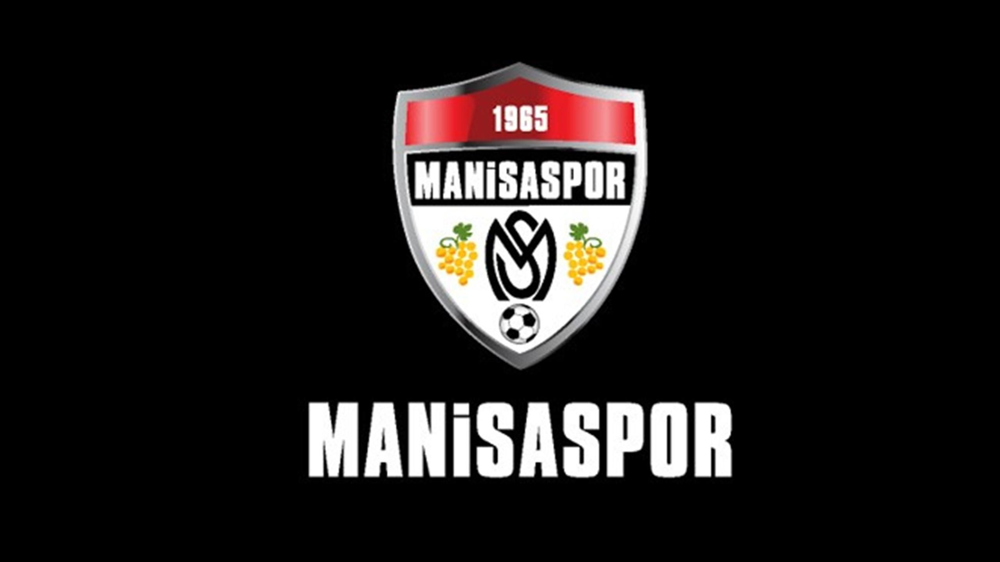
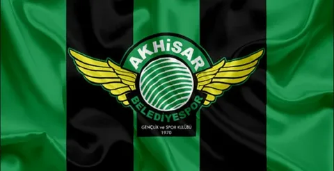

Manisa: Efsanelerin ve Şehzadelerin Şehri

Efsanelerin Doğuşu
Manisa’nın hikayesi, antik çağlarda Teselya’dan gelen Magnetlerin Sipylos Dağı eteklerinde kurduğu Magnesia ile başlar. Hititlerden Friglere kadar pek çok medeniyetin iz bıraktığı bu topraklar, tarihin akışını değiştiren Lidya Krallığı’na ev sahipliği yapmış; paranın ilk kez basıldığı yer olarak dünya ticaretinin merkezi olmuştur.

Şehzadeler Şehri & Muradiye Cami
1313 yılında Saruhanoğulları’nın fethiyle Türk-İslam mührünün vurulduğu şehir, Osmanlı İmparatorluğu döneminde bir "Ekol" haline gelmiştir. Fatih Sultan Mehmet ve Kanuni Sultan Süleyman gibi dünya tarihine yön veren 16 şehzadenin yetiştiği Manisa, imparatorluğun yönetim vizyonunun şekillendiği bir siyaset ve kültür odağıdır. Şehrin silüetini süsleyen ve Mimar Sinan'ın Ege bölgesindeki tek eseri olan Muradiye Camii ve Külliyesi, klasik Osmanlı mimarisinin en zarif örneklerinden biridir.
Cumhuriyet ve Bugün
8 Eylül 1922'de bağımsızlığına kavuşan Manisa, Cumhuriyet döneminde sanayisi, bereketli üzüm bağları ve köklü eğitim kültürüyle modern Türkiye'nin parlayan yıldızı olmuştur. Bugün, Spil Dağı’nın gölgesinde tarihini korurken, yetiştirdiği efsanelerle geleceğe yön vermeye devam etmektedir.

Kral Yolu ve Manisa
Dünya tarihinin en önemli ticaret yollarından biri olan Kral Yolu’nun başlangıç noktası Manisa’dır. Lidya Krallığı’nın başkenti Sardes’ten başlayan bu yol, Mezopotamya’ya kadar uzanıyordu. Manisa, bu yol sayesinde tarihte paranın ilk basıldığı ve ticaretin küresel ölçekte yönetildiği bir merkez haline gelmiştir.
Manisa Lalesi (Anemon)
Spil Dağı Milli Parkı’nda doğal olarak yetişen ve koruma altında olan endemik bir türdür. Latince adı Anemone coronaria olan bu lale, bölgenin iklim ve toprak yapısına özgü kırmızı rengiyle bilinir. Her yıl bahar aylarında çiçek açan lale, şehrin doğa turizmindeki en önemli sembollerinden biridir.


Şiirin ve Sanatın Sancağı
Manisa, sadece bir siyaset merkezi değil, aynı zamanda Osmanlı şehzadeleriyle birlikte Osmanlı şiirinin de yetiştiği sancaktır. Bu sancakta yetişen Fatih Sultan Mehmet (Avni) ve Kanuni Sultan Süleyman (Muhibbi) sadece devlet yönetiminde değil edebiyatta da önemli yere sahiptir.
Özellikle Manisa’nın sembolü olan lale, her iki sultanın şiirlerinde saflığın ve güzelliğin bir temsili olarak yer bulmuştur. Şehrin doğasından ilham alan bu dizeler, Manisa lalesinin zarif dokusunu divan edebiyatının en nadide örnekleriyle birleştirerek yüzyılları aşan edebi bir miras oluşturmuştur.
Hafsa Sultan ve Mesir Macunu Festivali
Osmanlı döneminde Yavuz Sultan Selim’in eşi ve Kanuni Sultan Süleyman’ın annesi Hafsa Sultan, Manisa’da hastalandığında dönemin hekimi Merkez Efendi tarafından 41 çeşit baharat ve ottan oluşan şifalı bir karışım hazırlanmıştır. Bu vasiyet üzerine başlayan gelenek, bugün yaklaşık 500 yıldır Uluslararası Mesir Macunu Festivali olarak devam etmektedir. UNESCO Somut Olmayan Kültürel Miras listesinde yer almaktadır.
Spor ve Yaşam
Manisa'nın Spor Kültürü
Futboldan doğa sporlarına, Ege'nin en dinamik spor altyapısına dair görüntüler ve kulüp başarıları.
Kaynak: Yerel Spor Arşivleri

1. Manisaspor:
Manisaspor, 1965 yılından bu yana şehrin en köklü futbol temsilcisidir. Kulüp, özellikle 2000'li yıllarda Süper Lig'de sergilediği performansla ve Türk futboluna kazandırdığı Arda Turan, Selçuk İnan, Caner Erkin, Burak Yılmaz gibi yıldız isimlerle Türk futboluna kazandırmıştır.
2. Akhisarspor:
2017-2018 sezonunda Ziraat Türkiye Kupası'nı, ardından TFF Süper Kupa'yı müzesine götüren kulüp, bu başarılarıyla Manisa'yı UEFA Avrupa Ligi gruplarında temsil etme hakkı kazanmıştır.